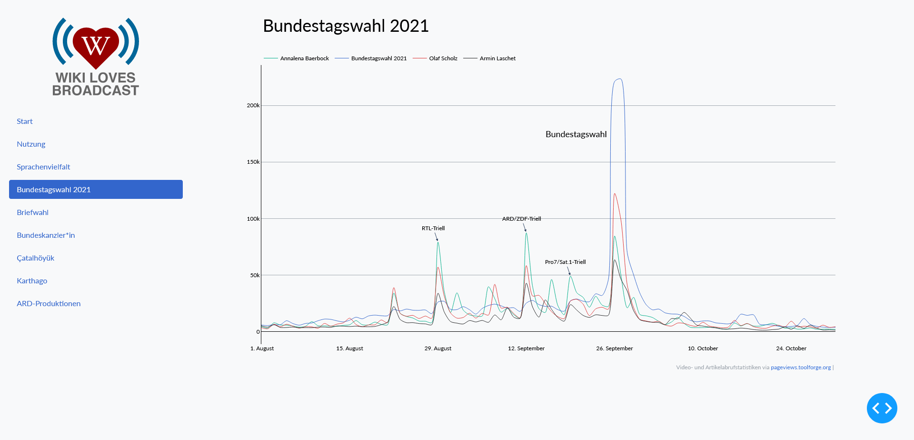

Dashboard¶
Design¶
Analog zu den Diagrammen bedient sich das Dashboard an den Empfehlungen des Wikimedia Style Sheets. Diese sind über style.css eingebunden. Für die Strukturierung der Inhalte wurde Dash Bootstrap verwendet, um bei unterschiedlichen Bildschirmgrößen ähnliche Propertionen zu erlangen.
Das wichtigste UI-Element ist die seitliche Navigation, deren Umsetzung an ein Tutorial von Charming Data angelehnt ist.
Das Logo ist dem Auftritt des Wiki-Loves-Broadcast-Projektes innherhalb der Wikipedia entnommen:
{kind=link}
app.py¶
Um app.py übersichtlicher zu gestalten, wurde der Code für die einzelnen Diagramme in separate Dateien ausgelegt. Er entspricht dabei jenem aus den auf den vorausgehenden Seiten vorgestellten Notebooks (page.py enthält den Code aus terrax.ipynb).
color.py und mapping.py sind für das Design der Diagramme benfalls im Ordner des Dashboards hinterlegt.
import dash
import dash_bootstrap_components as dbc
import dash_html_components as html
import dash_core_components as dcc
from dash.dependencies import Input, Output
import convpie
import langpie
import ardbar
import page
app = dash.Dash(__name__, external_stylesheets=[dbc.themes.BOOTSTRAP, "assets/style.css"])
navbar = html.Div(
className="nav-bar",
children=[
html.Img(
className="logo-image",
src="assets/WikiLovesBroadcast-5.svg",
alt="Wiki Loves Broadcast Logo",
),
dbc.Nav(
class_name="dbc-nav",
children=[
dbc.NavLink("Start", href="/", active="exact", class_name="nav-link"),
dbc.NavLink("Nutzung", href="/nutzung", active="exact", class_name="nav-link"),
dbc.NavLink("Sprachenvielfalt", href="/sprachenvielfalt", active="exact", class_name="nav-link"),
dbc.NavLink("Bundestagswahl 2021", href="/bundestagswahl", active="exact", class_name="nav-link"),
dbc.NavLink("Briefwahl", href="/briefwahl", active="exact", class_name="nav-link"),
dbc.NavLink("Bundeskanzler*in", href="/bundeskanzlerin", active="exact", class_name="nav-link"),
dbc.NavLink("Çatalhöyük", href="/catalhoyuk", active="exact", class_name="nav-link"),
dbc.NavLink("Karthago", href="/karthago", active="exact", class_name="nav-link"),
dbc.NavLink("ARD-Produktionen", href="/ard-produktionen", active="exact", class_name="nav-link"),
],
vertical=True,
pills=True,
),
],
)
content = html.Div(
id="page-content",
children=[],
)
app.layout = html.Div(
className="layout-div",
children=[
dcc.Location(id="url"),
navbar,
content,
],
)
@app.callback(
Output("page-content", "children"),
[Input("url", "pathname")]
)
def render_page_content(pathname):
if pathname == "/":
return [
html.H1("Wiki Loves Broadcast", className="start-h1")
]
elif pathname == "/nutzung":
return [
dcc.Graph(id="convpie", figure=convpie.create_conv_pie())
]
elif pathname == "/sprachenvielfalt":
return [
dcc.Graph(id="langpie", figure=langpie.create_lang_pie())
]
elif pathname == "/bundestagswahl":
return [
dcc.Graph(id="line", figure=page.create_line("btw21-0810"))
]
elif pathname == "/briefwahl":
return [
dcc.Graph(id="line", figure=page.create_line("br"))
]
elif pathname == "/bundeskanzlerin":
return [
dcc.Graph(id="line", figure=page.create_line("bu"))
]
elif pathname == "/catalhoyuk":
return [
dcc.Graph(id="line", figure=page.create_line("ca"))
]
elif pathname == "/karthago":
return [
dcc.Graph(id="line", figure=page.create_line("ka"))
]
elif pathname == "/ard-produktionen":
return [
dcc.Graph(id="ardbar", figure=ardbar.create_ard_bar())
]
# return dbc.Jumbotron([
# html.H1("404")
# ])
return html.Div(
html.H1("404")
)
if __name__ == "__main__":
app.run_server(debug=True, port=8040)

Anmerkungen¶
Leider ließen sich nicht alle Designentscheidungen analog zu Plotly umsetzen:
page.py:go.Figure.add_vline()wird nicht gezeichnethovermode="x unified"wird ignoriert
langpie.py:rotationwird nicht unterstützt